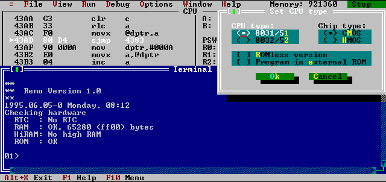

Software simulator for MCS51
This screenshot demonstrates one of option dialog boxes and the
terminal window. Terminal window simulates a terminal which is
connected to the serial interface of the simulated
microcontroller. Every character sent by the CPU is printed out in the
terminal window (it does not matter if it is opened or not) and every
time when you press a key in the terminal window the character will be
received by the serial interface of the CPU (when the simulation is
running obviously). During receiving of the character the cursor
disappears from the terminal window and reappears when receive is
completed. Echo is turned off in the terminal window which means that
only simulated program can "write" into the window.
